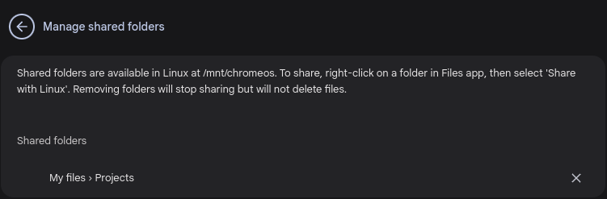
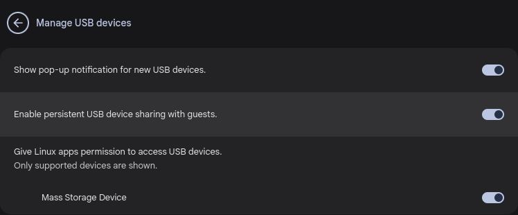
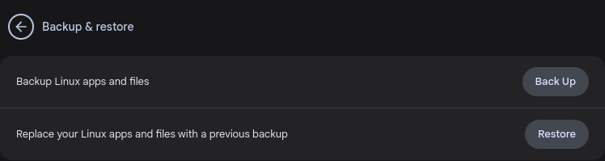

About this Guide
- This guide was tried and tested on an older-generation HP Chromebook 14-DB0023DX (codename: grunt/careena) released in May 2019, but with the latest (as of January 2025) stable branch of ChromeOS version 132.0.6834.154
- All images contain a title tag, meaning that if you hover your mouse-cursor over an image, you'll see a little tooltip with a brief description of what the image portrays.
- To view any image in full size, right-click the image, and select
Open image in new tab - All external links open in a new tab
Crostini Project
Crostini is the codename used internally that refers to Google's feature within ChromeOS that allows you to add Linux support to your Chromebook. You can install Linux CLI and GUI apps. By extension, this also means that you can run Android apps on your Chromebook, whether installed via the Play Store, "side-loaded" apps, or your own app-development projects.
Debian Bookworm
Google chose Debian as its base for the Crostini project. The version installed (as of January 2025) is the latest release, which is Debian 12.9 ... the Debian version is also (currently) known as stable or by its codename Bookworm
Linux apps
Screenshot showing Linux app installed via the Linux command-line
Android apps
Screenshot showing Android app deployed via ADB wireless debug
Prerequisites
Pre-2019 Chromebooks
ChromeOS Systems Supporting Linux on ChromeOS
As you may see from the list in the link above, only certain older-model Chromebooks are able to support the Linux environment, and even less are able to run Android apps. If your Pre-2019 Chromebook is not on the list, do not dispair ... at least give it a try
Post-2019 Chromebooks
Unless otherwise specified, all devices launched in 2019 and later support Linux on ChromeOS
Internet Connection
Unless you have a wired connection, before you install the Linux environment and update/upgrade the Linux system, please make sure that you're connected to a WiFi network, to save mobile data (if applicable)
Before doing anything major on any OS, it's always a good idea to ensure that your system software is up-to-date. To do that in ChromeOS, start by opening your Launcher and searching for Settings. In the Settings app, scroll down on the left, and click About ChromeOS
Tip: pin the Settings icon to your Shelf, because we'll be using it a lot |

At the top-right corner, click the Check for updates button
- If there are updates available, they will start downloading, then install automatically. Keep the Settings window visible so you know when to restart your Chromebook
- If there are no updates, a message will tell you so, just above Version information
After restarting your Chromebook, or if no update was required, open the Settings app again (if needed) and return to About ChromeOS but this time scroll down on the right, until you see Developers. Under that heading you'll see Linux development environment ... click the Set up button
You'll now see a dialog titled Set up Linux development environment ... if you would like to find out more about Setting up Linux on your Chromebook, click the Learn more link, otherwise click the Next button when ready
On the next screen, you'll be prompted for a Linux username ... this will be your account name within the Linux environment, i.e. the name of your $HOME folder under /home/ as well as the name that appears on the command-line next to the penguin hostname, as shown in this example:
Regarding the Disk size option, you can either accept the default size of 10.0 GB, or click Customized then use the slider to adjust between the minimum (2.0 GB) and the maximum allowed (about 1.0 GB less than your Chromebook's free space) ... click the Install button when ready
Please be patient while Linux is being set up, because this process is quite delicate (YMMV), i.e. refrain from using your Chromebook until the installation is complete
If all goes well and the installation completes successfully, you'll be presented with a Linux Terminal session automatically ... skip to the Terminal screenshots in the next section
However, if there's a problem during setup, especially in the latter stages, you'll see an error message similar to the screenshot below ... click the Retry button, but if nothing happens, then click the Cancel button. You might just find that the Linux environment was actually installed. If this is the case, and you are happy to proceed, restart your Chromebook to ensure that any changes will take effect
If you see a message saying Installation failed due to lack of storage space, then click Cancel and restart the setup process from scratch, but this time limit your Disk size to about half of what is available. There's no need to start deleting files, unless that's actually the cause
Congrats, you've just installed the Linux development environment on your Chromebook
| Tip: now might be a good time to pin the Terminal icon to your Shelf |

In the screenshot below, you might not notice unless it was pointed out, but there are actually two tabs open ... the first being your Terminal settings tab (circled in green), plus the actual terminal-session tab (outlined in red). Please click the Settings tab for now. We will cover the command-prompt soon
Each time you open the Terminal app, you're greeted with this window (normally just this first tab, unless using the shortcut we'll discuss soon). On this tab, you can launch a Linux session by clicking the penguin icon; add SSH connections if desired; or in Terminal settings, you can customize your terminal look & feel, and manage your SSH configuration. Developer settings takes you to the main Settings app, where you originally set up Linux. We will cover Developer settings in the next section
Here's a screenshot showing your actual command-prompt, running for the first time. As the message indicates, you will see this introduction 4 more times. Please read it so you have an understanding. If this information is relevant to you, copy and paste it into a text file, and save it for future reference
Update Repository Lists
Like any OS that is freshly installed, it's always a good idea to update the system before first use. To do this in your Linux Terminal, run the following command:
sudo apt update(using elevated privileges run the apt command with the update option)
This will download an updated list of software repositories from Debian servers. You may see a message stating that X packages can be upgraded
Install Upgrades
If packages can be upgraded, run the following command to install the upgrades:
sudo apt upgrade(using elevated privileges run the apt command with the upgrade option)
Note that, in the prompt shown below, the Y is capitalized ... this indicates that it's the default selection, so if you just press the Enter key, it means Yes. You can press y or n if you wish
Linux will then download the required upgrade files, unpack them, and install them.
That's it ... you've just updated your repo lists and upgraded your system
Shut down Linux
When you close the Terminal window (or a tab), either by clicking the Close button or by typing exit at the command-line, your Linux environment is still running in the background. This has many advantages, but if you find that your system is low on resources, you may wish to quit Linux altogether.
To completely shut down your Linux environment, you'll find a new menu entry on the Terminal app's right-click menu that you saw earlier, as in the screenshot below. Rest assured ... if you do not see Shut down Linux, then it's not running in the background
To configure options for your Linux development environment, go to Settings | About ChromeOS | Linux development environment, as shown in previous sections
Here is an outline for each of the settings shown in the screenshot:
- Manage shared folders: you can share a folder from within the Files app by right-clicking the folder and selecting
Share with Linuxfrom the menu.
* This works for both My Files folders, Google Drive folders, and External storage devices.
* After sharing one or two folders, they're listed all in one place, within Manage shared folders.
* To stop sharing a folder, first ensure that relevant files are closed in Linux apps, then in Manage shared folders, click the Stop sharing icon ⨯ adjacent to the folder's name

* To view shared folders in your Linux terminal, run the commandls /mnt/chromeos - Manage USB devices: within this menu, you can set preferences regarding what happens when you connect a USB device to your Chromebook; whether or not those same devices will be connected to Linux automatically upon connection; and whether or not to allow Linux access to a connected device. Note that only supported devices are shown within this interface.
* Once you connect a device, the text "Available USB devices will appear here" will change to a list of supported devices, where you can enable/disable Linux access.
Notes re storage devices:
If you're unable to mount the disk/partition in Linux, please refer to the Troubleshooting section later in this guide.
Please ensure Linux files are closed properly before turning off access - Backup & restore: in this menu, you can Back up or Restore your full Linux setup, along with your apps and files ... you might do this periodically, or just before a Powerwash, for example

* The backup file (a Crostini image file) is saved to a location of your choosing (preferably an external drive) with the default filename ofchromeos-linux-YYYY-MM-DD.tiniwhere YYYY-MM-DD reflects the current date. To give you an estimate of what to expect, a backup after installing 39 Linux updates (system: 30.7 MB total disk usage) and one small GUI app (mousepad: 18.3 MB total disk usage), the.tinifile was 437 MB, and took about 2 minutes.
* The backup includes any/all changes to your Linux development environment since install (or the most-recent restore) including apps, documents, settings, and even system updates. Restoring such a backup will return your Linux environment to its former state, for that backup.
* Tip: you can restore a backup directly from the Files app, by double-clicking the.tinifile - Develop Android apps: in here, you'll find just one toggle switch for Enable ADB debugging ... if you're interested in testing your Android apps for Desktop compatibility, then refer to the next section, which covers it in far more detail
* Tip: if you enabled this previously, then removed and reinstalled your Linux environment, you may find that this is still enabled. The same applies if you previously enabled Developer options within Android settings - Port forwarding: allows you to open the port to your local development server, for example.
* Tip: if you're unable to toggle a port, make sure you have Linux running by opening the Terminal app and connecting to Linux. Feel free to close the Terminal app once Linux is up and running. It will continue to run in the background, unless you shut it down - Disk size: while initially setting up your Linux development environment, you specified how much disk space to allocate to Linux. To adjust that size, click the
Changebutton
Use the slider to set the new size, then click theRe-sizebutton when ready - Allow Linux to access your microphone: requires Linux to Shut down and Restart
- Remove Linux development environment: this action will completely remove your personal Linux files/folders, as well as the Linux development environment itself
You will be asked to confirm your selection before proceeding.
* Tip: do a Linux backup, as outlined above, before removing
Because this is a big change within ChromeOS, it's probably best to restart your Chromebook, especially if you're troubleshooting and intend to reinstall the Linux development environment straight away
How to set up your Chromebook to test your Android apps for Desktop compatibility:
These steps assume you have already installed the Linux development environment.
ADB debugging at the ChromeOS level
The first thing you need to do is enable ADB debugging on your Chromebook. ADB (Android Debug Bridge) is a versatile command-line tool that lets you communicate with a device, or for devices to communicate amongst themselves.
To enable Android debugging on your Chromebook, go to Settings, scroll down on the left, and click About ChromeOS
Scroll down on the right this time, and under Developers, click Linux development environment ... in there, about half way down, click Develop Android apps then turn on the toggle switch next to Enable ADB debugging ... you will be prompted to confirm. There are two important things to note at this stage:
- enabling ADB requires you to restart your Chromebook
- more importantly, disabling ADB requires a factory reset
If you agreed and you understand that disabling ADB debugging requires a factory reset, then after restarting your Chromebook, you'll be prompted again to confirm (please excuse the low-quality image)
ADB debugging at the Android level
Assuming that you're using the Chromebook to test your Android apps for Desktop compatibility, then you'll need to also enable Wireless debugging, so you can deploy your app over WiFi, directly from within Android Studio on your main development computer.
To do this, start by opening Android settings (similar to the Settings app on your mobile phone):
- To open Android settings in ChromeOS, go to Settings, scroll down on the left, and click
Apps - Now click Manage Google Play preferences ... in there, click
Android settings
Tip: pin the Android preferences icon to your Shelf for easier access. Yes, in main Settings, it's called settings, but on Shelf its preferences |
In the Android settings app, scroll down to About device ... in there, you'll see Build number. Click or tap on that 7 times, then you'll see a Toast message saying You are now a developer
Back out of About device by clicking the ← arrow, then click System, and in there you'll see a new menu item: Developer options
Go into Developer options and enable the toggle switch next to ADB debugging ... you'll be prompted to confirm, but this time, there's no restart.
Also, enable the toggle switch next to Wireless debugging ... it may not stay in the On position, but that's okay for now
Connect from your Main computer
Before connecting wirelessly from your main computer, click the WiFi icon at the bottom-right of your Chromebook screen, then go into the Network list by clicking the ˃ arrow next to your current WiFi connection at top-left of the menu. This time, at the top-right of that menu, you'll see the Network info icon ... click that to show your current IP address.
Make a note of the IP address for the next step, or just type it directly into your main computer as you go. To connect wirelessly using adb, type the following command in your main computer's terminal:
adb connect <your.chromebook.ip.address>:5555That adb command should prompt a security alert on your Chromebook, asking you to Allow USB debugging? Toggle the checkbox to Always allow from this computer then click Allow
If you run the original adb connect ... command again on you main computer, you should see a message saying Already connected to XXX.XXX.X.XXX:5555
You should now be ready to test your Android apps by deploying them to your Chromebook ... happy debugging!
Developer options
In the previous section, we covered how to enable Developer options within Android settings. There is much more that you can do in that menu than just enable ADB debugging though. A good example is Quick setting developer tiles ... within there, you can turn on Window animation scale to view your animations in slow motion, for example.
Also, if you're doing maps-based app development, you can Select a mock location app.
Having said all that, please do not change settings in Developer options if you do not know what they're for
Limited disk space
Remember that Linux runs in a container, and is limited on the amount of disk space that it has access to. Keep that in mind when installing (especially) GUI apps, which may require lots of dependencies. For example, installing gedit would require 196 MB of downloads plus 640 MB of disk space to install, whereas a lighter-weight text editor like mousepad (for instance) requires only 3.5 MB of downloads plus the 14.8 MB to install
Linux startup times
- If you have an older or less-powerful model, it pays to wait about 30 seconds after starting your Chromebook before starting a new Linux session
- If you just started your Chromebook, or if the Linux environment was Shut down completely, then you go into the Files app and click Linux files, you'll see a spinning animation for a number of seconds. This is to be expected, because ChromeOS has to "spin-up" your Linux OS in order to display those files, which are actually stored within your Linux development environment itself
- The same principle applies to starting Linux apps from the Launcher or your Shelf ... you may have a better experience if you start your Linux container before you start (especially large) Linux apps from the Launcher or Shelf. You can then close the Terminal window if it's not actually required
Login screen warning
On your first login to your Chromebook after installing the Linux development environment, you may notice a warning in red saying "This device may contain apps that haven't been verified by Google" ... this is to be expected, as you are now able to install any number of third-party Linux and Android apps. If you share this Chromebook with others however, please let them know that the warning is nothing to worry about
Settings within Linux
Just like with a distro running on bare-metal, or in a VM, your Linux environment can be configured to suit your needs. For example, here are a few things you might like to change:
- Don't like the
penguinhostname? Change it by first editing/etc/hostnamethen immediately after, edit/etc/hostsand change thepenguinreference in that file to the same name that you just set in/etc/hostname... now, you must completely shut down and restart your Linux environment for changes to take effect.
* After shutting down Linux, wait about 10 seconds before relaunching your Linux environment
Fixing problems with Linux
If you experience issues with Linux or Linux apps, following these steps in turn, after saving any open files in Linux:
- Try shutting down your Linux environment.
Wait ten seconds or so.
Restart your Linux environment - Try restarting your Chromebook
- Try updating your Linux repos and installing any upgrades ...
To do so, open Terminal then run the following commands:
sudo apt update && sudo apt upgradeGet to know your device
A big help in troubleshooting any tech-related issue is knowing your hardware. A great tool for this in ChromeOS is the About Version information, which can be found by going to Settings | About ChromeOS | Additional details | Build details, or by just typing chrome://version directly into your Chrome browser's address bar ... here, you'll see info like:
- Firmware Version: a hint to your Chromebook's boardname
- Customization ID: a hint to your Chromebook's codename
- ARC version: (Android Runtime for Chrome) SDK version
Installation failure
IMHO, it's not uncommon to see a message saying Error installing Linux ... luckily you can click the Retry button, but if the installation fails more than twice, it might be a good idea to consider your network connection. If you suspect that the failure might be caused by a spotty network, then (if you can spare the data) consider using your mobile phone as a hotspot, just for this install phase. The installation will use approximately 500 MB of data. Remember to disconnect & turn off your hotspot as soon as Linux installs successfully
Installing ADB/SDK platform-tools on your main computer
On your main computer, if you were unable to find adb in your <sdk-location>/platform-tools directory, the Android documentation recommends that you should get the latest SDK Platform-Tools through Android Studio's SDK Manager
If you do not use Android Studio, you should be able to install it through most distros' repositories. The advantage with this method is that the executables are updated along with your distro ... however, the manual downloads from the official Android website may be more up-to-date.
SDK Platform Tools can be download from the official Android website.
If you download/install manually, you'll need to either specify the full path to the adb executable file (or create an alias) or add its location to your computer environment's path
Trouble mounting external storage
When you allow access to a USB external storage device within Manage USB devices, you will most likely find that it's not mounted within the Linux environment, and worse still, not able to be mounted. Apparently, this is for security reasons.
As a workaround, instead of giving "permission" through Manage USB devices, turn off the toggle switch next to the offending device. Now, go into the Files app, and right-click the USB drive listed at bottom-left, and select Share with Linux ... this "share" would now be managed through Manage shared folders, instead of Manage USB devices. Within Linux itself, files/folders on your external USB drive will be available via /mnt/chromeos/removable/
Official links
Some links to pages on the official ChromeOS.dev website:
Installing Linux apps and packages
Restarting the Linux container
Unofficial links
Some other links found useful while researching this guide:
Mount Block Devices in ChromeOS
Mentioned links
Links scattered throughout this guide, here in one place:
Wikipedia Debian version history
Pre-2019 Systems Supporting Linux on ChromeOS
Setting up Linux on your Chromebook Learn more
Android SDK Platform Tools